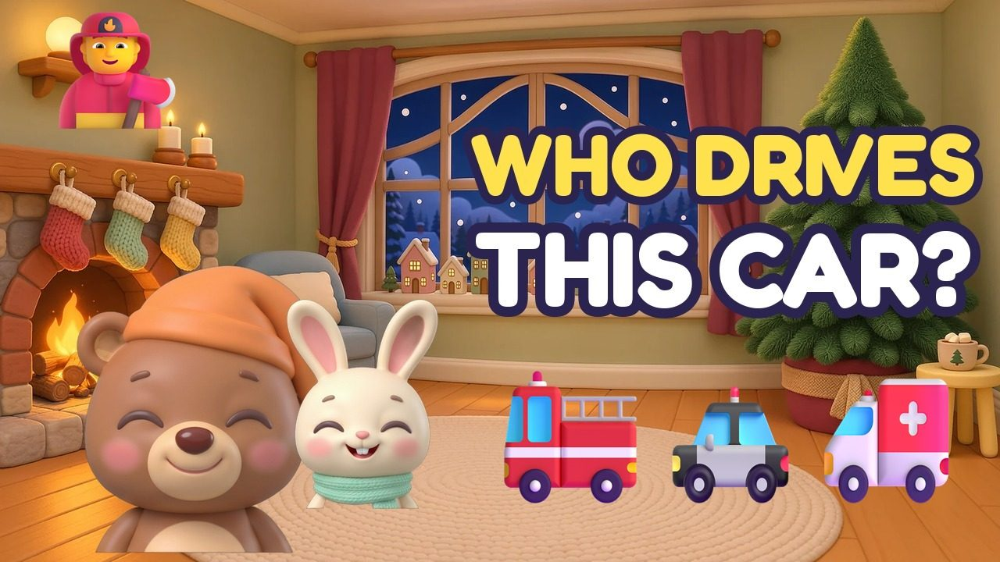

Car, Truck & Train Songs for Toddlers
Car, truck, bus and train songs for toddlers: Wheels on the Bus, construction trucks, the Christmas train and helper vehicles like the fire truck and ambulance. Count the cars and make the vehicle sounds together.
Christmas songsChristmas coloring pagesChristmas activitiesAnimal songsLearning songsVehicle songsHealthy habits

Who Drives This Car?
Who drives this car (jobs game), Car sounds song
Who drives this car (jobs game), Car sounds song

Christmas Train Song
Christmas train song, Count the train cars
Christmas train song, Count the train cars

Construction Trucks Song
Diggers, cranes and dump trucks, Safety song
Diggers, cranes and dump trucks, Safety song

Wheels on the Bus 1 Hour
A full hour of songs, Great for car rides
A full hour of songs, Great for car rides

The Bus Lost Its Colors
Colors on the bus, Wheels on the Bus
Colors on the bus, Wheels on the Bus

Christmas & Winter Mega Activity Pack
44 printable pages for ages 2-5: coloring, counting, tracing, mazes, cards, gift tags and ornaments starring Lumo, Pip and Bubbo. Instant PDF download.
Get the pack: $20
44 printable pages for ages 2-5: coloring, counting, tracing, mazes, cards, gift tags and ornaments starring Lumo, Pip and Bubbo. Instant PDF download.
Get the pack: $20